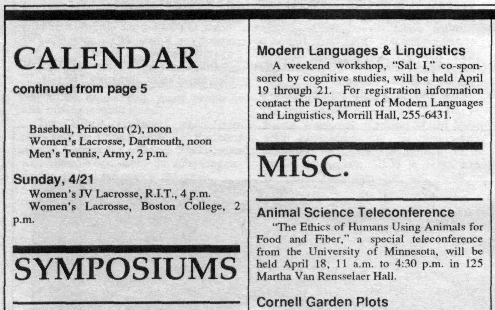

SALT1-SALT30: A retrospective
The first SALT was organized in 1991 at Cornell University by Gennaro Chierchia, Fred Landman, and Sally McConnell-Ginet. It was held April 19-21, 1991. The invited speakers were Greg Carlson, Irene Heim, Robert May, and Barbara Partee. SALT has been held annually by different institutions ever since. (See the SALT history page)
The panel, “SALT1 to SALT30: A Retrospective,” will include Sally and Fred along with Veneeta Dayal, Manfred Krifka, Barbara Partee, Craige Roberts, and Ede Zimmerman, who all gave talks at SALT1. Unfortunately Gennaro cannot participate because of a conflict. Ede, Manfred, and Veneeta are also giving talks at SALT30.
In 1991, Sally was chair of what was then the Department of Modern Languages and Linguistics (now the Department of Linguistics) and her colleagues in semantics were Gennaro (with whom she had cotaught introductory semantics for linguists and with whom she had recently written Meaning and Grammar: An Introduction to Semantics) and Fred (with whom she later cotaught a seminar on how to think about vagueness in formal models of meaning). Veneeta Dayal (PhD Cornell 1991) had just left to teach at Rutgers at the time of SALT1 -- she now holds a named chair at Yale and will be giving one of the invited talks at SALT30. Gennaro left not long after SALT1, first to return to Milan in his native Italy and then to join the Harvard linguistics department, and then Fred left a few years later, to take a position in the ling dept of Tel Aviv University. Sally is a Professor Emerita at Cornell.
About the conference itself, a lot has not changed since SALT1. SALT was unusual when it began in asking for relatively long abstracts and scheduling relatively long talks with no parallel sessions. That meant and continues to mean significant attention from virtually all attendees to a relatively small number of talks. And there’s always been time built in for people to talk informally with one another. Those important traditions remain unchanged. What has changed, in order to help accommodate more work without parallel sessions, is the introduction of poster sessions with lightning talks. And this year, of course, there’s a big change: all sessions are online!
SALT1 program
SALT1 proceedings
Below is a scanned version of the proceedings of SALT1 from: https://linguistics.cornell.edu/sites/linguistics/files/volume10_fall_1991.pdf.
They are also archived as part of the SALT proceedings website: https://journals.linguisticsociety.org/proceedings/index.php/SALT/issue/archive
SALT1 in the 1991 news!
SALT1 was advertised in the April 18, 1991 Cornell Chronicle: 
Read the entire April 18, 1991 Cornell Chronicle here: https://ecommons.cornell.edu/handle/1813/25393